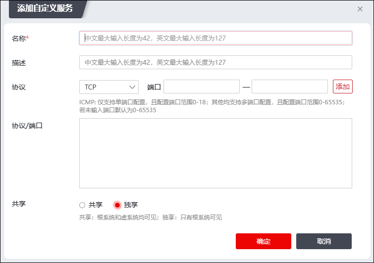

为实现对网络中某种服务进行访问控制，但在系统没有预先定义该服务，用户可以根据需要自行定义服务，然后设置访问控制规则对自定义服务进行控制。
具体操作步骤如下：
| 步骤1 | 选择 ，激活“自定义服务”页签。 |
| 步骤2 | 点击【添加】，弹出“添加自定义服务”窗口。如下图所示。 |

在设置自定义服务资源时，各项参数的具体说明如下表所示。
参数 |
说明 |
|---|---|
名称 |
设置自定义服务资源名，用于在NGFW中唯一标识自定义服务资源。 说明： 名称中不能包含特殊字符：！@#$%^&+=|?\""\\<>'~以及空格。中文最大输入长度为42，英文最大输入长度为127。 |
描述 |
输入自定义服务资源的描述信息。中文最大输入长度为42，英文最大输入长度为127。 |
协议 |
表示自定义服务使用的协议类型，可选项：TCP、UDP、ICMP和其他IP协议。 |
端口 |
协议类型为“TCP”、“UDP”和“其他IP协议”时显示该选项。用于输入自定义服务资源占用的单个端口或端口范围，前后两个文本框分别表示起始和终止端口号。端口支持输入多组端口，最多可添加32个，端口的范围为0-65535。如果是单个端口，则只填写起始端口。 |
类型值 |
协议类型为“ICMP”时，显示该参数。取值范围：0-18。 |
代码值 |
协议类型为“ICMP”时，显示该参数。取值范围：0-18。 |
协议号 |
协议类型为“其他IP协议”时，显示该参数。取值范围：0-65535。 |
共享 |
选择是否允许共享该服务资源，若选择共享，则虚拟系统也可以引用该服务资源。可选项：共享、独享。默认为独享状态。 |
| 步骤3 | 设置完成后，点击【确定】按钮完成自定义服务资源的添加。 |